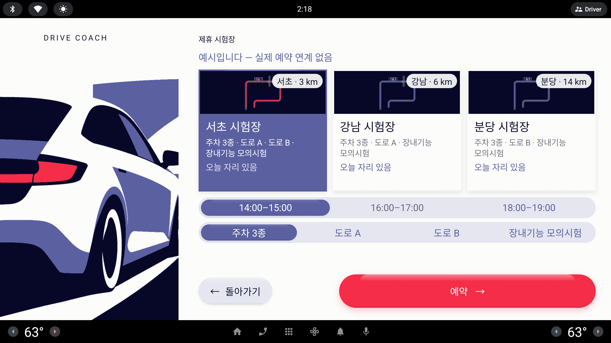

제휴 시험장 시트의 시간 칩 트랙에서 "마감된 시간대" 를 한눈에 갈라 보이게 하는 시안 셋(A·B·C). 시험장 카드 · 코스 트랙 · `← 돌아가기` · `예약 →` 는 그대로 두고 시간 트랙만 바꾼다. 화면마다 1/3 시트 전체와, 그 아래 시간 트랙만 2/3 로 키운 그림을 붙였다.
사용자 피드백 (원문, 10/6 저녁 · #제휴시험장)
- 가능한 시간과 가능하지 않은 선택지 간에 차이가 거의 없어 혼동이 있어 안되는 것은 확실히 안되게 처리하는 방안 제안 필요 (3개)
시트 그림은 실제의 1/3 (853 × 423) — 실제 화면은 약 3배. 확대 그림은 실제의 2/3
InkPaperPeriwinkleLavenderSignal· 모든 시안이 같은 데이터: 서초 시험장 선택 · 14:00–15:00 선택 · 16:00–17:00 마감 · 코스 주차 3종
시드 데이터 (SeedCatalog.slotsToday)시험장마다 오늘 시간대 셋 중 하나가 `available = false`. 서초 = 16:00–17:00 마감 · 강남 = 14:00–15:00 마감 · 분당 = 18:00–19:00 마감. 상태기계는 마감 시간 예약을 거부한다.
지금 그리는 법 (SelectionTrack)마감 칸은 글자만 Muted(먹 60%), 가능한 칸은 Periwinkle 글자 — 둘 다 중간 톤이라 거의 같아 보인다. 마감 칸은 눌러도 반응이 없고(semantics disabled), 그것이 오히려 "고장" 처럼 느껴진다.
공통 규칙운전자 문장에 개수를 쓰지 않는다("두 개 숨김" 금지). 시간 라벨 14:00–15:00 은 지금처럼 허용. 시트는 정차 화면이라 터치 가능. 색 하나에만 기대지 않는다(글자 · 선 · 무늬 중 하나 이상).

지금
글자 톤 차이 하나
서초를 고르면 시간 트랙은 `14:00–15:00`(선택) · `16:00–17:00`(마감) · `18:00–19:00`(가능). 마감인 16:00 과 가능한 18:00 은 글자 색(Muted 와 Periwinkle)만 다르고 모양 · 크기 · 배경이 같다.
문제
둘 다 Lavender 위 중간 톤 글자라 차 화면 거리 · 밝기에서 구분이 안 된다 — 색만으로 상태를 말하는 셈
마감 칸을 누르면 아무 일도 없다. 이유를 알 길이 없어 "터치가 안 먹는다" 로 읽힌다
카드에는 "오늘 자리 있음" 만 있어, 어느 시간이 막혔는지는 트랙을 눌러 봐야 안다
읽는 법 · A 는 "있지만 막힘" 을 글자로, B 는 "없는 것은 안 보임" 으로, C 는 "막힘" 을 무늬 · 아이콘 · 피드백으로 말한다.
시안 A · 서초 시험장
DRIVE COACH
제휴 시험장
예시입니다 — 실제 예약 연계 없음
서초 · 3 km
서초 시험장
주차 3종 · 도로 A · 도로 B · 장내기능 모의시험
오늘 자리 있음
강남 · 6 km
강남 시험장
주차 3종 · 도로 A · 장내기능 모의시험
오늘 자리 있음
분당 · 14 km
분당 시험장
주차 3종 · 도로 B · 장내기능 모의시험
오늘 자리 있음
14:00–15:0016:00–17:00마감18:00–19:00
주차 3종도로 A도로 B장내기능 모의시험
← 돌아가기
예약 →
시안 A
마감 (Closed)
마감 칸은 자리를 그대로 지키되 글자를 먹 35% 로 더 흐리게, 시간에 취소선, 옆에 작은 `마감` 꼬리표. 그림자 · 눌림 효과 없음, 눌러도 아무 일 없다.
장점
세 갈래로 말한다 — 더 흐린 톤 · 취소선 · `마감` 글자. 흑백 · 색약에서도 남는 것은 선과 글자(색에만 기대지 않음)
시간 순서와 칸 자리가 시험장마다 같다 — "16:00 은 오늘 없구나" 를 그 자리에서 읽는다
트랙 모양(Lavender 알약 트랙 · 칸 셋)은 분류·모드 트랙과 같다. 바뀌는 것은 마감 칸의 글자뿐
TalkBack 은 지금처럼 "사용할 수 없음" + 내용 설명 "마감"
주의점
탭 — 여전히 무반응. 다만 `마감` 글자가 이유를 먼저 보여 줘서 "고장" 으로 읽힐 일은 줄어든다
먹 35% 글자는 일부러 읽기 어렵게 한 것 — 시간 자체는 흐려도 `마감` 꼬리표는 먹 60% 로 읽힌다
꼬리표가 칸 폭(실제 약 540 dp)에 시간과 함께 들어가야 한다 — 32 dp 글자로 한 줄에 충분
구현SelectionTrack 의 `!available` 갈래만 바꿈(글자 톤 · TextDecoration.LineThrough · 꼬리표) · 시간 트랙만 `enabled` 를 쓰므로 다른 트랙 영향 없음 · 난이도 하
2/3 확대 · 서초 시험장 시간 트랙
14:00–15:0016:00–17:00마감18:00–19:00
1/3 · 강남 (14:00 마감 · 첫 가능 시간 선택 가정)
14:00–15:00마감16:00–17:0018:00–19:00
1/3 · 분당 (18:00 마감)
14:00–15:0016:00–17:0018:00–19:00마감
시안 B · 서초 시험장
DRIVE COACH
제휴 시험장
예시입니다 — 실제 예약 연계 없음
서초 · 3 km
서초 시험장
주차 3종 · 도로 A · 도로 B · 장내기능 모의시험
오늘 자리 있음
강남 · 6 km
강남 시험장
주차 3종 · 도로 A · 장내기능 모의시험
오늘 자리 있음
분당 · 14 km
분당 시험장
주차 3종 · 도로 B · 장내기능 모의시험
오늘 자리 있음
14:00–15:0018:00–19:00
마감된 시간은 숨겼어요
주차 3종도로 A도로 B장내기능 모의시험
← 돌아가기
예약 →
시안 B
가능한 것만 (Only open)
트랙에는 예약할 수 있는 시간만 둔다. 칸 폭은 남은 개수만큼 나눠 넓어진다. 트랙 아래 흐린 한 줄 "마감된 시간은 숨겼어요" — 개수는 말하지 않는다. 모두 마감이면 트랙 대신 "오늘은 자리가 없어요" 한 줄(카드는 이미 "오늘 자리 없음").
장점
헷갈릴 대상이 화면에 아예 없다 — "안 되는 것은 확실히 안 됨" 을 가장 강하게 지킨다
남은 칸이 넓어져 누르기 쉽다(서초는 칸 둘, 실제 약 820 dp 폭)
새 모양 · 새 상태가 없다. 트랙은 분류·모드 트랙과 똑같은 모습
주의점
정보 손실 — 16:00 이 마감인지, 원래 없는 시간인지 모른다. 안내 한 줄이 그 틈을 메우지만 흐린 글자라 놓치기 쉽다
자리 흔들림 — 시험장을 바꿀 때마다 둘째 칸의 시간이 바뀐다(서초 18:00 · 강남 18:00 · 분당 16:00) — 같은 자리가 다른 시간이 된다
안내 줄 때문에 코스 트랙이 실제 약 50 dp 내려간다 — 버튼 줄과의 틈은 충분
탭 — 마감 칸이 없으니 문제 자체가 없다
구현VenueSheet 에서 `slots.filter { it.available }` + 안내 한 줄 + 모두 마감 분기 · 시간 칩 셋을 가정한 계측 · 캡처가 있으면 함께 고침 · 난이도 하
2/3 확대 · 서초 시험장 시간 트랙 + 안내 한 줄
14:00–15:0018:00–19:00
마감된 시간은 숨겼어요
1/3 · 강남 (14:00 숨김)
16:00–17:0018:00–19:00
1/3 · 분당 (18:00 숨김)
14:00–15:0016:00–17:00
시안 C · 서초 시험장
DRIVE COACH
제휴 시험장
예시입니다 — 실제 예약 연계 없음
서초 · 3 km
서초 시험장
주차 3종 · 도로 A · 도로 B · 장내기능 모의시험
오늘 자리 있음
강남 · 6 km
강남 시험장
주차 3종 · 도로 A · 장내기능 모의시험
오늘 자리 있음
분당 · 14 km
분당 시험장
주차 3종 · 도로 B · 장내기능 모의시험
오늘 자리 있음
14:00–15:0016:00–17:0018:00–19:00
주차 3종도로 A도로 B장내기능 모의시험
← 돌아가기
예약 →
시안 C
빗금 + 자물쇠 (Hatched)
마감 칸을 먹 빗금(먹 13% 가는 사선)으로 채우고 시간 앞에 작은 자물쇠. 누르면 선택은 그대로 두고 칸 위에 Ink 말풍선 "마감된 시간이에요" 가 잠깐(약 2초) 뜬다.
장점
멀리서도 "칸이 막혔다" 가 면으로 보인다 — 세 시안 중 가장 눈에 띄는 차이
무늬 · 아이콘 · 피드백 세 갈래라 색에 기대지 않는다. 자물쇠는 설명이 필요 없는 기호
탭 — 유일하게 눌렀을 때 이유를 돌려준다. "터치가 안 먹는다" 는 오해가 없어진다
주의점
빗금은 앱에 처음 생기는 질감 — 기하학 포스터 언어와는 맞지만(사선 면), 분류·모드 트랙과 다른 표정이 하나 늘어난다
말풍선(토스트)도 앱에 처음 생기는 요소. 위치 · 시간 · 접근성 알림(LiveRegion)을 새로 정해야 한다
마감 칸을 "누를 수 있게" 만들어야 해서 semantics 가 바뀐다(선택은 막고 클릭만 받음) — 계측 테스트 기대값도 바뀐다
구현칸 배경 drawBehind 사선 · 자물쇠 아이콘 · 마감 칸 클릭 → 말풍선 상태(타이머) · 난이도 중
2/3 확대 · 서초 시험장 시간 트랙 — 기본 / 16:00 을 눌렀을 때
14:00–15:0016:00–17:0018:00–19:00
마감된 시간이에요
14:00–15:0016:00–17:0018:00–19:00
1/3 · 강남 (14:00 마감)
14:00–15:0016:00–17:0018:00–19:00
1/3 · 분당 (18:00 마감)
14:00–15:0016:00–17:0018:00–19:00
한눈에 비교
"구분 갈래" = 색 말고 상태를 알려 주는 수단의 수. 트랙 일관성 = 분류·모드 트랙(같은 SelectionTrack)과 모양이 얼마나 같은가.
시안
멀리서 차이
구분 갈래 (색 제외)
탭했을 때
시간 자리 고정
트랙 일관성
구현
지금
거의 없음
0
무반응
예
같음
—
A 마감
뚜렷함
취소선 · `마감` 글자
무반응 (이유는 이미 보임)
예
같음
하 · SelectionTrack 한 곳
B 가능한 것만
대상 없음
— (안 보임)
해당 없음
아니오
같음
하 · 목록 거름 + 한 줄
C 빗금 + 자물쇠
가장 뚜렷함
빗금 · 자물쇠 · 말풍선
"마감된 시간이에요"
예
빗금 질감 추가
중 · 새 질감 + 토스트
추천
시안 A · 마감
칸 자리를 지킨 채 더 흐린 톤 · 취소선 · `마감` 꼬리표 로 "있지만 오늘은 안 됨" 을 색 없이도 읽히게 한다. 바뀌는 곳이 SelectionTrack 의 마감 갈래 하나라 10/7–8 녹화 전에 넣어도 다른 화면을 흔들지 않는다.
Codex: SelectionTrack `!available` → 글자 먹 35% · LineThrough · 꼬리표 `마감`(먹 60%, 32 dp) · 그림자 없음 · 내용 설명 "마감" · 캡처 `lesson-venue-slots.png` 다시 찍기
더 세게 가고 싶으면 C 의 자물쇠만 꼬리표 앞에 빌린다(빗금 · 토스트는 뒤로) — 구현 난이도는 그대로 하
B 는 "정보를 숨긴다" 는 점에서 이 앱의 정직성 원칙(무엇이 되고 안 되는지 보여 주기)과 덜 맞아 남겨 두는 대안